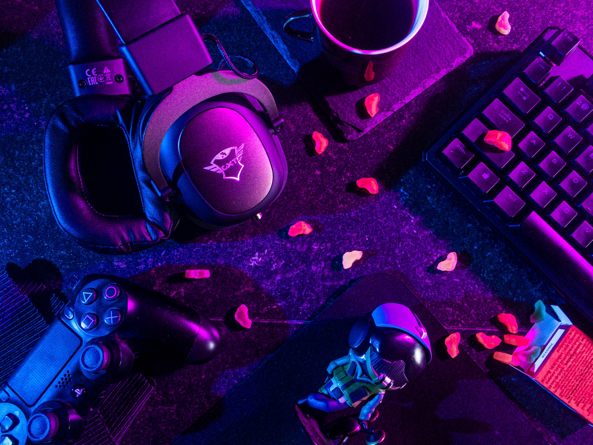

IT en computers in het algemeen is iets waar ik me altijd bezighoud. Leren programmeren, de ontwikkeling van een programma; wat houdt dat allemaal in? Hoe communiceren PC's eigenlijk met elkaar? Als ik een website ga bezoeken en een knop druk, wat doet de computer daarmee? Zulke soorten vragen had ik altijd in mijn hoofd en probeerde ik een antwoord op te vinden. Dit en het feit dat ik heel graag met computers willen werken leidde me dus naar een IT richting in het hoger onderwijs. Ik heb ook het netwerken gebied van IT gestudeerd en een diploma graduaat netwerkbeheer behaald. Routing en switching komt mij niet onbekend voor, netwerkadministratie ook niet. Ik heb mijn opleiding gedaan in CVO-HIK in Geel.
Het opleiding duurt 2 jaar en tijdens het eerste jaar kregen we een mix van programmeer vakken en netwerken vakken, o.a. C#, Cisco Routing en Switching, SQL, webdesign, etc. Pas in het tweede jaar kon je kiezen of je verder wilt gaan als programmeur of netwerkbeheerder. Ik heb dus het laatste gekozen.
In dit opleiding was ook een stage inbegrepen. Dit heb ik gedaan bij Heilig Graf Turnhout. Daar heb ik als stagiaire ICT-Coordinator gewerkt. Dus alle alles in verband met IT; problemen oplossen, het huidige IT structuur van het school verbeteren en onderhouden horen allemaal bij het takenpakket. Ik vond het heel plezant werk en elke dag was een vreugde, hier heb ik ook het meeste geleerd over netwerkbeheer en werk in IT. PC's herstellen en daarna vervangen met kapotte PC's in de klaslokalen had ik vaak gedaan, zeker ook netwerkproblemen oplossen want vaak als er een netwerkprobleem was bij een van de leerkrachten kan de les niet doorgaan. Dus zulke problemen was altijd en topprioriteit.
Daarnaast heb ik ook switchen moeten instellen, configureren en dan ter plaatse vervangen. Het oude switch moest demonteerd worden, alle kabels overschakelen aan de nieuwe. Ten laatste, heb ik ook vaak aan de hulpdesk gewerkt. Via de ticketingsysteem kon de leerkrachten hun IT problemen doorsturen om de IT team te informeren. Ik begon elke dag met het overlopen van de verschillende klachten en dan zien wat ik direct kan doen of wat moet heel dringend gebeuren, welke klacht had het hoogste prioriteit.
Waarom doe ik aan programmeren dan? Ik heb een beetje aan programmeren gedaan tijdens mijn studies. Ik vond het heel erg interessant, maar het kwam niet zo gemakkelijk en vloeiend naar mij toe. Ik heb veel moeten oefenen en intensief studeren om programmeren te kunnen grijpen. Tijdens de zomervakantie heb ik online cursussen gevolgd om verder mijn vaardigheden te versterken en om me voor te bereiden voor dit jaar. De programmeertalen C# en Java heb ik het meest gezien en geleerd.
Ondanks mijn moelijkheden met programmeren, het is iets waar ik heel graag wil verbeteren en eindelijk beheersen. Ik wil programma's ontwikkelen en coderen en ik wil mensen zien mijn programma's gebruiken en hun leven gemakkelijker maken. Hierdoor zit ik in Thomas More Turnhout en studeer ik programmeren.
Mijn passie voor IT kwam er oorspronkelijk van mijn hobby in gaming. Op heel jonge leeftijd zag ik mijn oudere zus het computerspel Starcraft spelen op onze heel oud Windows 98 computer en zij heeft mij het spel laten proberen. Zo is dus mijn geestdrift voor computerspellen begonnen.
Ik begon met Starcraft en Starcraft: Brood War, een heel populaire RTS(Real Time Strategy)-computerspel dat werd uitgebracht in 1998 door Blizzard Entertainment; een Amerikaanse producent van computerspellen, onder meer bekend van de computerspelseries Overwatch, Warcraft, Hearthstone, Diablo en Starcraft. Ik ben persoonlijk een supporter en fan van Blizzard want al deze computerspelseries heb ik gespeeld met een goede hoeveelheid.
Ik heb veel mensen leren kennen en zelfs heel goede vrienden gemaakt door gaming. Nieuwe mensen ontmoet van Het Verenigde Koninkrijk, Nederland, Zweden, Denemarken, Duitsland, De Verenigde Staten... Het is iets moois, dat je van achter je PC zo veel mensen kan tegen komen, veel plezier maken en bevrienden. Want bij gaming, zoals andere hobby's is veel meer plezierig met anderen dan alleen. Een paar van deze vrienden heb ik zelfs persoonlijk ontmoet!
Het spel waar ik het langst heb gespeeld is het heel bekende spel World of Warcraft. Het spel werd uitgebracht in 2004 door Blizzard Entertainment, maar zelf ben ik in 2011 begonnen. Het is een fantasie MMORPG(Massively Multiplayer Online Roleplaying Game), een spel waar je je eigen mannetje of poppetje maakt en daarmee spelen in het enorm, consistent digitaal wereld met een grote aantal van andere mensen. De bedoeling is dat je samen met andere spelers verschillende uitdagingen aangaan. Hier is het dus vrij gemakkelijk mensen te leren kennen en bevrienden.
Andere computerspellen waar ik me bezig houd zijn de MOBA(Multiplayer Online Battle Arena) League of Legends en het FPS(First Person Shooter) Counter-Strike. Deze zijn meer competitief, want de bedoeling is andere spelers verslaan. Zulke spellen zijn vaak het meest populaire met het grootste aantal spelers.
Gaming is ook veel veranderd, zeker in de net voorbije jaren. De industrie wordt alleen groter en groter en is nu een heel gemeenschappelijk in vergelijking 10 of 20 jaar geleden. Denk aan de rage van Pokemon GO, Fortnite, League of Legends... Enorm populaire geworden niet alleen tussen gamers maar ook aan mensen die meer computerspellen gewoontjes spelen, wat heel belangrijk is. Je hebt ook streaming op het online streaming platform Twitch.tv, waar dagelijks 1,4 miljoen mensen gelijktijdig gaming streams bekijken.
Door de jaren heen begon ik meer en meer geintereseerd te worden aan de development kant van computerspellen. Hoe worden ze gemaakt? Hoe werkt dit nu allemaal? Hoe beginnen men er aan? Graag zou ik zelf een computerspelontwikkelaar worden, ik zal zeker in de toekomst proberen of de mogelijkheid er is.